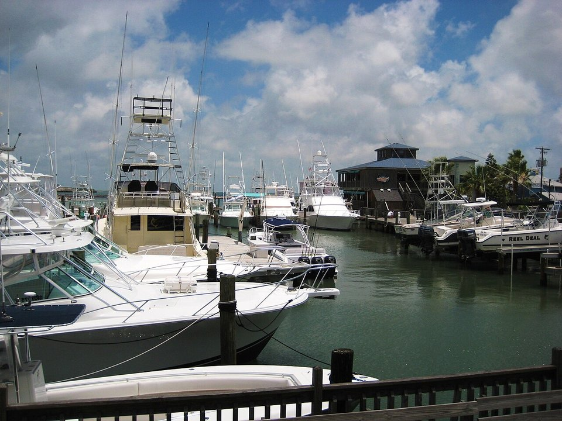

Downtown · Historic inn
The Tarpon Inn
An 1886 inn with tarpon scales signed by famous anglers, including FDR.
Official details for The Tarpon InnGolf carts, Gulf beaches and whooping cranes.
Port Aransas is a small fishing and beach town at the north end of Mustang Island, where people get around by golf cart and the free ferry crosses to the mainland every few minutes. Land at Mustang Beach Airport, a short ride from the beach, stay at the historic Tarpon Inn or on the sand at Port Royal, book a fishing charter, and drive around the bay to Rockport for the Texas Maritime Museum and, in winter, the endangered whooping cranes at Aransas National Wildlife Refuge.

Time illustration: direct distance at 150 KTAS plus 15 minutes for departure and arrival, matching the discovery page. Use ForeFlight for your actual flight plan.
Check the weekend weather at both ends → Flight category, your minimums and the crosswind on the best runway.
RAS, Mustang Beach Airport, is a non-towered city airport at 5 feet with a 3,482-foot runway, a few minutes from downtown Port Aransas and the beach.
Mustang Beach Airport, Port Aransas, TX
A short runway at sea level with strong crosswinds off the Gulf; 100LL only. Aransas County Airport (KRKP) in Rockport, with a 5,608-foot runway and Aransas Co. Airport Services (361-790-0141), is the longer-runway alternative across the bay. No live fuel price is shown.
Texas Gulf Coast flying: low morning stratus and fog, strong onshore winds, summer thunderstorms, and hurricanes and tropical storms from June to November. About 1000 nm from Myrtle Beach: a long cross-country day with two fuel stops. Plan four or more nights, or break the trip with an overnight on the way.
Rates and availability need travel dates. Summer weekends and spring break fill up.
An 1886 inn with tarpon scales signed by famous anglers, including FDR.
Official details for The Tarpon InnBeachfront condos with a big lagoon pool.
Official details for Port Royal Ocean ResortUpscale cottages and homes in a walkable beach village.
Official details for Cinnamon ShoreLarge beachfront condos with pools.
Official details for Sunflower Beach Resort & ResidencesCondos on the sand south of town.
Official details for Sandpiper CondominiumsSuites and condos with a pool, a short walk to the beach.
Official details for Plantation SuitesCondos, cottages and beach houses.
Visit Port Aransas for More places to stayPrices and availability for your dates, through our partner Stay22. This is an affiliate link: we may earn a commission at no cost to you. The picks above are never paid.
Reserve weekend dinners.
Dockside seafood on the harbor.
Official details for Virginia’s on the BayPort A’s special-occasion Italian restaurant.
Official details for Venetian Hot PlateSeafood and steaks overlooking the marina.
Official details for Trout Street Bar & GrillA local favorite for pizza after the beach.
Official details for Port A PizzeriaThe oldest bar in Port Aransas.
Official details for Shorty’s PlaceSeafood shacks and beach bars.
Visit Port Aransas for More restaurantsWhooping cranes winter at Aransas from November to March.
Winter home of the endangered whooping crane.
U.S. Fish & Wildlife ServiceThis prototype links to the local visitor site. It does not yet match events to your travel dates.
Boat tours from Rockport to see the cranes.
Rockport-Fulton Chamber for Whooping cranesWarm Gulf water.
Visit Port Aransas for Beach seasonRedfish, trout and offshore species.
Visit Port Aransas for FishingCheck the local calendar when choosing a weekend, and confirm dates and tickets with the organizer.
A sample coast weekend. This is a long flight; plan four or more nights. No bookings or availability confirmed.
Land at RAS mid-morning.
Seafood lunch by the harbor.
The beach, then back to the airport.
Land at RAS, subject to weather and your actual flight plan.
Rent a golf cart and hit the beach.
Dinner at Virginia’s on the Bay.
A fishing charter.
Mustang Island State Park.
Seafood in town.
Ferry to Rockport and the Maritime Museum.
Return the car and allow time at the FBO.
Coastal fog lifts by mid-morning; check the TAFs before you go.
A fishing charter.
Mustang Island State Park.
Dinner at Virginia's on the Bay.
This guide is part of a multi-stop flying trip. Set your dates and aircraft, then swap stops to make it your own.
These details make the difference between an appealing list and a usable getaway.
Lodging, then a golf cart and charter.
About 1,000 nm from Myrtle Beach: a long day or two easy days.
3,482 feet at RAS; use KRKP if you need more.
March to June and September to November.
Picks and links reviewed by WingAway Weekends. Hours, prices, menus and availability change often, so confirm directly with each place before booking. Spotted something out of date, or have a favorite we missed? Email us at hello@wingawayweekends.com.
WingAway Weekends helps you discover the destination. Use ForeFlight and current official aviation information for route, performance, weather, NOTAMs and preflight decisions. Flight planning and PIC responsibility stay with the pilot.